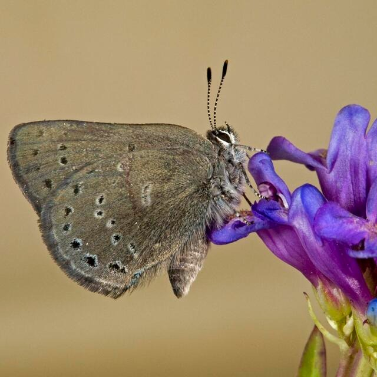
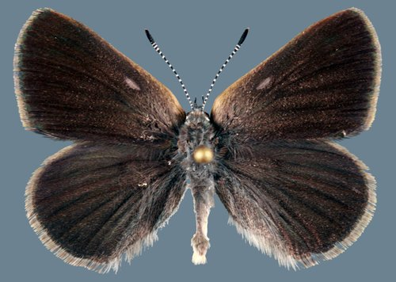

Satyrium semiluna
- Common names
- Sagebrush Sooty Hairstreak
Half-moon Hairstreak
- Family
- Lycaenidae
- Family common name
- Gossamer Wings
- On the wing
- M May to E September, peak in June-July
One generation
- Habitat
- Subalpine, high meadows, windy ridges, knolls and summits, sage-steppe plateaus, open slopes, pine forest openings, basin hillsides and mounds, and mountain roadsides, 1000 - 8500 ft.
- Larval host:
- Lupines.
- Nectar plants:
- Groundsels and other mpountain wildflowers. Males perch on rabbit brush, basin big sage and other shrubs near lupines where females fly.
- Abundance
- C
Range Map
Seasonality